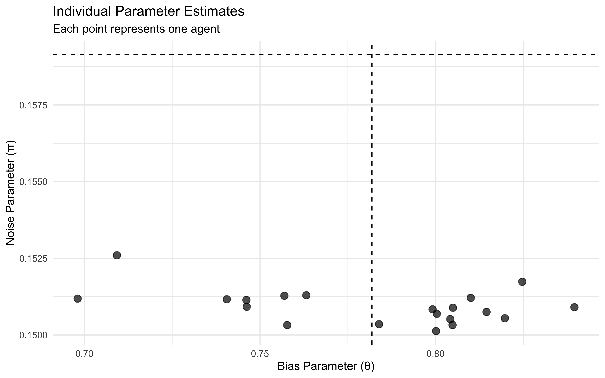

Chapter 9 Bayesian models of cognition
9.2 Design the model
[MISSING: EXPLAIN THE MODEL, INCLUDING DISTINCTION BETWEEN CONTINUOUS AND DISCRETE]
SimpleBayes_f <- function(Source1, Source2){
outcome <- inv_logit_scaled(logit_scaled(Source1) + logit_scaled(Source2))
return(outcome)
}
SimpleBayes_MultiSource_f <- function(sources) {
outcome <- inv_logit_scaled(sum(logit_scaled(sources)))
return(outcome)
}9.3 Create the data
Source1 <- seq(0.1,0.9, 0.1)
Source2 <- seq(0.1,0.9, 0.1)
db <- expand.grid(Source1 = Source1, Source2 = Source2)
for (n in seq(nrow(db))) {
db$belief[n] <- SimpleBayes_f(db$Source1[n], db$Source2[n])
}
for (n in seq(nrow(db))) {
db$belief[n] <- SimpleBayes_f(db$Source1[n], db$Source2[n])
db$choice[n] <- rbinom(1,1, db$belief[n])
db$continuous[n] <- db$belief[n]*9
db$discrete[n] <- round(db$belief[n]*9,0)
}9.4 Visualize
[MISSING: Explain]
ggplot(db, aes(belief)) +
geom_density() +
theme_bw()
ggplot(db, aes(Source1, belief, color = Source2, group = Source2)) +
geom_line() +
theme_bw()
ggplot(db, aes(choice)) +
geom_density() +
theme_bw()ggplot(db, aes(Source1, choice, color = Source2, group = Source2)) +
geom_smooth(se = F) +
theme_bw()## `geom_smooth()` using method = 'loess' and formula = 'y ~ x'ggplot(db, aes(continuous)) +
geom_density() +
theme_bw()ggplot(db, aes(Source1, continuous, color = Source2, group = Source2)) +
geom_smooth() +
theme_bw()## `geom_smooth()` using method = 'loess' and formula = 'y ~ x'ggplot(db, aes(discrete)) +
geom_density() +
theme_bw()ggplot(db, aes(Source1, discrete, color = Source2, group = Source2)) +
geom_smooth() +
theme_bw()## `geom_smooth()` using method = 'loess' and formula = 'y ~ x'9.5 DAta for Stan
data_simpleBayes <- list(
N = nrow(db),
y = db$choice,
Source1 = db$Source1,
Source2 = db$Source2
)
data_simpleBayes_ms <- list(
N = nrow(db),
y = db$choice,
Source1 = db$Source1,
Source2 = db$Source2
)9.6 Create the Stan Model
stan_simpleBayes_model <- "
data {
int<lower=0> N;
array[N] int y;
array[N] real<lower=0, upper = 1> Source1;
array[N] real<lower=0, upper = 1> Source2;
}
transformed data{
array[N] real l_Source1;
array[N] real l_Source2;
l_Source1 = logit(Source1);
l_Source2 = logit(Source2);
}
parameters {
real bias;
}
model {
bias ~ normal(0, 1);
target += bernoulli_logit_lpmf(y | bias + to_vector(l_Source1) + to_vector(l_Source2));
}
generated quantities{
array[N] real log_lik;
for (n in 1:N){
log_lik[n] = bernoulli_logit_lpmf(y[n] | bias + l_Source1[n] + l_Source2[n]);
}
}
"
write_stan_file(
stan_simpleBayes_model,
dir = "stan/",
basename = "W9_SimpleBayes.stan")## [1] "/Users/au209589/Dropbox/Teaching/AdvancedCognitiveModeling23_book/stan/W9_SimpleBayes.stan"file <- file.path("stan/W9_SimpleBayes.stan")
mod_simpleBayes <- cmdstan_model(file, cpp_options = list(stan_threads = TRUE),
stanc_options = list("O1"))## Compiling Stan program...##
-
\
|
/
-
\
|
/
-
\
|
/
-
\
|
/
-
\
|
/
-
\
|
/
-
\
|
/
-
\
|
/
-
9.7 Fitting the model
samples_simple <- mod_simpleBayes$sample(
data = data_simpleBayes,
fixed_param = TRUE,
seed = 123,
chains = 2,
parallel_chains = 2,
threads_per_chain = 2,
iter_warmup = 1500,
iter_sampling = 3000,
refresh = 500
)## Running MCMC with 2 parallel chains, with 2 thread(s) per chain...
##
## Chain 1 Iteration: 1 / 3000 [ 0%] (Sampling)
## Chain 1 Iteration: 500 / 3000 [ 16%] (Sampling)
## Chain 1 Iteration: 1000 / 3000 [ 33%] (Sampling)
## Chain 1 Iteration: 1500 / 3000 [ 50%] (Sampling)
## Chain 1 Iteration: 2000 / 3000 [ 66%] (Sampling)
## Chain 1 Iteration: 2500 / 3000 [ 83%] (Sampling)
## Chain 1 Iteration: 3000 / 3000 [100%] (Sampling)
## Chain 2 Iteration: 1 / 3000 [ 0%] (Sampling)
## Chain 2 Iteration: 500 / 3000 [ 16%] (Sampling)
## Chain 2 Iteration: 1000 / 3000 [ 33%] (Sampling)
## Chain 2 Iteration: 1500 / 3000 [ 50%] (Sampling)
## Chain 2 Iteration: 2000 / 3000 [ 66%] (Sampling)
## Chain 2 Iteration: 2500 / 3000 [ 83%] (Sampling)
## Chain 2 Iteration: 3000 / 3000 [100%] (Sampling)
## Chain 1 finished in 0.1 seconds.
## Chain 2 finished in 0.1 seconds.
##
## Both chains finished successfully.
## Mean chain execution time: 0.1 seconds.
## Total execution time: 0.1 seconds.9.8 Basic evaluation
samples_simple$summary()## # A tibble: 82 10
## variable mean median sd mad q5 q95 rhat ess_bulk ess_tail
## <chr> <num> <num> <num> <num> <num> <num> <num> <num> <num>
## 1 bias 0.126 0.126 0.548 0.812 -0.421 0.674 NA 2.01 NA
## 2 log_lik[1] -0.0160 -0.0160 0.00793 0.0118 -0.0239 -0.00807 6.49e13 2.01 NA
## 3 log_lik[2] -0.0356 -0.0356 0.0175 0.0259 -0.0531 -0.0181 6.49e13 2.01 NA
## 4 log_lik[3] -0.0600 -0.0600 0.0293 0.0434 -0.0893 -0.0308 6.49e13 2.01 NA
## 5 log_lik[4] -0.0916 -0.0916 0.0441 0.0654 -0.136 -0.0475 6.49e13 2.01 NA
## 6 log_lik[5] -0.134 -0.134 0.0634 0.0940 -0.197 -0.0704 6.49e13 2.01 NA
## 7 log_lik[6] -0.193 -0.193 0.0896 0.133 -0.283 -0.104 6.49e13 2.01 NA
## 8 log_lik[7] -0.284 -0.284 0.127 0.188 -0.411 -0.157 6.49e13 2.01 NA
## 9 log_lik[8] -1.13 -1.13 0.362 0.537 -1.49 -0.764 6.49e13 2.01 NA
## 10 log_lik[9] -0.669 -0.669 0.257 0.381 -0.926 -0.412 6.49e13 2.01 NA
## # with 72 more rowssamples_simple$loo()## Warning: Can't fit generalized Pareto distribution because all tail values are the same.
## Warning: Can't fit generalized Pareto distribution because all tail values are the same.
## Warning: Can't fit generalized Pareto distribution because all tail values are the same.
## Warning: Can't fit generalized Pareto distribution because all tail values are the same.
## Warning: Can't fit generalized Pareto distribution because all tail values are the same.
## Warning: Can't fit generalized Pareto distribution because all tail values are the same.
## Warning: Can't fit generalized Pareto distribution because all tail values are the same.
## Warning: Can't fit generalized Pareto distribution because all tail values are the same.
## Warning: Can't fit generalized Pareto distribution because all tail values are the same.
## Warning: Can't fit generalized Pareto distribution because all tail values are the same.
## Warning: Can't fit generalized Pareto distribution because all tail values are the same.
## Warning: Can't fit generalized Pareto distribution because all tail values are the same.
## Warning: Can't fit generalized Pareto distribution because all tail values are the same.
## Warning: Can't fit generalized Pareto distribution because all tail values are the same.
## Warning: Can't fit generalized Pareto distribution because all tail values are the same.
## Warning: Can't fit generalized Pareto distribution because all tail values are the same.
## Warning: Can't fit generalized Pareto distribution because all tail values are the same.
## Warning: Can't fit generalized Pareto distribution because all tail values are the same.
## Warning: Can't fit generalized Pareto distribution because all tail values are the same.
## Warning: Can't fit generalized Pareto distribution because all tail values are the same.
## Warning: Can't fit generalized Pareto distribution because all tail values are the same.
## Warning: Can't fit generalized Pareto distribution because all tail values are the same.
## Warning: Can't fit generalized Pareto distribution because all tail values are the same.
## Warning: Can't fit generalized Pareto distribution because all tail values are the same.
## Warning: Can't fit generalized Pareto distribution because all tail values are the same.
## Warning: Can't fit generalized Pareto distribution because all tail values are the same.
## Warning: Can't fit generalized Pareto distribution because all tail values are the same.
## Warning: Can't fit generalized Pareto distribution because all tail values are the same.
## Warning: Can't fit generalized Pareto distribution because all tail values are the same.
## Warning: Can't fit generalized Pareto distribution because all tail values are the same.
## Warning: Can't fit generalized Pareto distribution because all tail values are the same.
## Warning: Can't fit generalized Pareto distribution because all tail values are the same.
## Warning: Can't fit generalized Pareto distribution because all tail values are the same.
## Warning: Can't fit generalized Pareto distribution because all tail values are the same.
## Warning: Can't fit generalized Pareto distribution because all tail values are the same.
## Warning: Can't fit generalized Pareto distribution because all tail values are the same.
## Warning: Can't fit generalized Pareto distribution because all tail values are the same.
## Warning: Can't fit generalized Pareto distribution because all tail values are the same.
## Warning: Can't fit generalized Pareto distribution because all tail values are the same.
## Warning: Can't fit generalized Pareto distribution because all tail values are the same.
## Warning: Can't fit generalized Pareto distribution because all tail values are the same.
## Warning: Can't fit generalized Pareto distribution because all tail values are the same.
## Warning: Can't fit generalized Pareto distribution because all tail values are the same.
## Warning: Can't fit generalized Pareto distribution because all tail values are the same.
## Warning: Can't fit generalized Pareto distribution because all tail values are the same.
## Warning: Can't fit generalized Pareto distribution because all tail values are the same.
## Warning: Can't fit generalized Pareto distribution because all tail values are the same.
## Warning: Can't fit generalized Pareto distribution because all tail values are the same.
## Warning: Can't fit generalized Pareto distribution because all tail values are the same.
## Warning: Can't fit generalized Pareto distribution because all tail values are the same.
## Warning: Can't fit generalized Pareto distribution because all tail values are the same.
## Warning: Can't fit generalized Pareto distribution because all tail values are the same.
## Warning: Can't fit generalized Pareto distribution because all tail values are the same.
## Warning: Can't fit generalized Pareto distribution because all tail values are the same.
## Warning: Can't fit generalized Pareto distribution because all tail values are the same.
## Warning: Can't fit generalized Pareto distribution because all tail values are the same.
## Warning: Can't fit generalized Pareto distribution because all tail values are the same.
## Warning: Can't fit generalized Pareto distribution because all tail values are the same.
## Warning: Can't fit generalized Pareto distribution because all tail values are the same.
## Warning: Can't fit generalized Pareto distribution because all tail values are the same.
## Warning: Can't fit generalized Pareto distribution because all tail values are the same.
## Warning: Can't fit generalized Pareto distribution because all tail values are the same.
## Warning: Can't fit generalized Pareto distribution because all tail values are the same.
## Warning: Can't fit generalized Pareto distribution because all tail values are the same.
## Warning: Can't fit generalized Pareto distribution because all tail values are the same.
## Warning: Can't fit generalized Pareto distribution because all tail values are the same.
## Warning: Can't fit generalized Pareto distribution because all tail values are the same.
## Warning: Can't fit generalized Pareto distribution because all tail values are the same.
## Warning: Can't fit generalized Pareto distribution because all tail values are the same.
## Warning: Can't fit generalized Pareto distribution because all tail values are the same.
## Warning: Can't fit generalized Pareto distribution because all tail values are the same.
## Warning: Can't fit generalized Pareto distribution because all tail values are the same.
## Warning: Can't fit generalized Pareto distribution because all tail values are the same.
## Warning: Can't fit generalized Pareto distribution because all tail values are the same.
## Warning: Can't fit generalized Pareto distribution because all tail values are the same.
## Warning: Can't fit generalized Pareto distribution because all tail values are the same.
## Warning: Can't fit generalized Pareto distribution because all tail values are the same.
## Warning: Can't fit generalized Pareto distribution because all tail values are the same.
## Warning: Can't fit generalized Pareto distribution because all tail values are the same.
## Warning: Can't fit generalized Pareto distribution because all tail values are the same.
## Warning: Can't fit generalized Pareto distribution because all tail values are the same.## Warning: Some Pareto k diagnostic values are too high. See help('pareto-k-diagnostic') for details.##
## Computed from 6000 by 81 log-likelihood matrix
##
## Estimate SE
## elpd_loo -36.4 4.3
## p_loo 3.1 0.4
## looic 72.8 8.5
## ------
## Monte Carlo SE of elpd_loo is NA.
##
## Pareto k diagnostic values:
## Count Pct. Min. n_eff
## (-Inf, 0.5] (good) 0 0.0% <NA>
## (0.5, 0.7] (ok) 0 0.0% <NA>
## (0.7, 1] (bad) 0 0.0% <NA>
## (1, Inf) (very bad) 81 100.0% 1
## See help('pareto-k-diagnostic') for details.## What if the outcome is binary?
## What if the outcome is a gaussian?
## What if the outcome is ordinal?
## What if the outcome is a reaction time?
## What if the outcome is determined by n sources?9.9 Weighted Bayes
[MISSING: EXPLANATION] [MISSING: MODEL WITH EXACT WEIGHT FORMULA]
WeightedBayes_f <- function(Source1, Source2, w1, w2){
w1 <- (w1 - 0.5)*2
w2 <- (w2 - 0.5)*2
outcome <- w1 * logit_scaled(Source1) + w2 * logit_scaled(Source2)
return(outcome)
}
Source1 <- seq(0.1,0.9, 0.1)
Source2 <- seq(0.1,0.9, 0.1)
w1 <- seq(0.5,1, 0.1)
w2 <- seq(0.5,1, 0.1)
db <- expand.grid(Source1 = Source1, Source2 = Source2, w1 = w1, w2 = w2)
for (n in seq(nrow(db))) {
db$belief[n] <- WeightedBayes_f(db$Source1[n], db$Source2[n],db$w1[n], db$w2[n])
}
for (n in seq(nrow(db))) {
db$belief[n] <- WeightedBayes_f(db$Source1[n], db$Source2[n],db$w1[n], db$w2[n])
db$binary[n] <- rbinom(1,1, inv_logit_scaled(db$belief[n]))
db$continuous[n] <- (inv_logit_scaled(db$belief[n])*9)
db$discrete[n] <- round(inv_logit_scaled(db$belief[n])*9,0)
}9.10 Visualize
ggplot(db, aes(belief)) +
geom_density() +
theme_bw()
p1 <- ggplot(db, aes(Source1, inv_logit_scaled(belief), color = Source2, group = Source2)) +
geom_line() +
theme_bw() +
facet_wrap(w1~w2)
p1
9.11 Build the Stan model
stan_WB_model <- "
data {
int<lower=0> N;
array[N] int y;
vector[N] Source1;
vector[N] Source2;
}
parameters {
real weight1;
real weight2;
}
model {
target += normal_lpdf(weight1 | 1,1);
target += normal_lpdf(weight2 | 1,1);
for (n in 1:N)
target += bernoulli_logit_lpmf(y[n] | weight1 * Source1[n] + weight2 * Source2[n]);
}
generated quantities{
array[N] real log_lik;
real w1;
real w2;
real w1_prior;
real w2_prior;
w1_prior = (normal_rng(1,1) - 0.5)*2 ;
w2_prior = (normal_rng(1,1) - 0.5)*2 ;
w1 = (weight1 - 0.5)*2;
w2 = (weight2 - 0.5)*2;
for (n in 1:N)
log_lik[n] = bernoulli_logit_lpmf(y[n] | weight1 * Source1[n] + weight2 * Source2[n]);
}
"
write_stan_file(
stan_WB_model,
dir = "stan/",
basename = "W9_WB.stan")## [1] "/Users/au209589/Dropbox/Teaching/AdvancedCognitiveModeling23_book/stan/W9_WB.stan"file <- file.path("stan/W9_WB.stan")
mod_wb <- cmdstan_model(file, cpp_options = list(stan_threads = TRUE))## Model executable is up to date!db1 <- db %>% subset(w1 == 1 & w2 == 1) %>% mutate(
l1 = logit_scaled(Source1),
l2 = logit_scaled(Source2)
)
p3 <- ggplot(db1, aes(Source1, inv_logit_scaled(belief), color = Source2, group = Source2)) +
geom_line() +
theme_bw()
p3 ggplot(db1, aes(Source1, binary)) +
geom_smooth() +
theme_bw()## `geom_smooth()` using method = 'loess' and formula = 'y ~ x'
data_weightedBayes <- list(
N = nrow(db1),
y = db1$binary,
Source1 = logit_scaled(db1$Source1),
Source2 = logit_scaled(db1$Source2)
)
samples_weighted <- mod_wb$sample(
data = data_weightedBayes,
seed = 123,
chains = 2,
parallel_chains = 2,
threads_per_chain = 2,
iter_warmup = 1500,
iter_sampling = 3000,
refresh = 500
)## Running MCMC with 2 parallel chains, with 2 thread(s) per chain...
##
## Chain 1 Iteration: 1 / 4500 [ 0%] (Warmup)
## Chain 1 Iteration: 500 / 4500 [ 11%] (Warmup)
## Chain 1 Iteration: 1000 / 4500 [ 22%] (Warmup)
## Chain 1 Iteration: 1500 / 4500 [ 33%] (Warmup)
## Chain 1 Iteration: 1501 / 4500 [ 33%] (Sampling)
## Chain 2 Iteration: 1 / 4500 [ 0%] (Warmup)
## Chain 2 Iteration: 500 / 4500 [ 11%] (Warmup)
## Chain 2 Iteration: 1000 / 4500 [ 22%] (Warmup)
## Chain 2 Iteration: 1500 / 4500 [ 33%] (Warmup)
## Chain 2 Iteration: 1501 / 4500 [ 33%] (Sampling)
## Chain 1 Iteration: 2000 / 4500 [ 44%] (Sampling)
## Chain 1 Iteration: 2500 / 4500 [ 55%] (Sampling)
## Chain 1 Iteration: 3000 / 4500 [ 66%] (Sampling)
## Chain 2 Iteration: 2000 / 4500 [ 44%] (Sampling)
## Chain 2 Iteration: 2500 / 4500 [ 55%] (Sampling)
## Chain 1 Iteration: 3500 / 4500 [ 77%] (Sampling)
## Chain 1 Iteration: 4000 / 4500 [ 88%] (Sampling)
## Chain 2 Iteration: 3000 / 4500 [ 66%] (Sampling)
## Chain 2 Iteration: 3500 / 4500 [ 77%] (Sampling)
## Chain 1 Iteration: 4500 / 4500 [100%] (Sampling)
## Chain 2 Iteration: 4000 / 4500 [ 88%] (Sampling)
## Chain 2 Iteration: 4500 / 4500 [100%] (Sampling)
## Chain 1 finished in 0.3 seconds.
## Chain 2 finished in 0.4 seconds.
##
## Both chains finished successfully.
## Mean chain execution time: 0.4 seconds.
## Total execution time: 0.4 seconds.samples_weighted$summary()## # A tibble: 88 10
## variable mean median sd mad q5 q95 rhat ess_bulk ess_tail
## <chr> <num> <num> <num> <num> <num> <num> <num> <num> <num>
## 1 lp__ -42.4 -42.1 1.01 0.703 -44.3 -41.4 1.00 2918. 3650.
## 2 weight1 1.21 1.19 0.270 0.268 0.784 1.67 1.00 3347. 3240.
## 3 weight2 0.675 0.672 0.230 0.231 0.311 1.06 1.00 3786. 3583.
## 4 log_lik[1] -0.0228 -0.0162 0.0222 0.0133 -0.0626 -0.00347 1.00 2931. 3157.
## 5 log_lik[2] -0.0523 -0.0425 0.0380 0.0285 -0.123 -0.0123 1.00 2997. 3304.
## 6 log_lik[3] -0.0920 -0.0794 0.0549 0.0464 -0.195 -0.0286 1.00 3135. 3460.
## 7 log_lik[4] -0.146 -0.131 0.0746 0.0668 -0.287 -0.0543 1.00 3383. 3575.
## 8 log_lik[5] -0.224 -0.206 0.100 0.0930 -0.409 -0.0928 1.00 3786. 3583.
## 9 log_lik[6] -1.33 -1.30 0.350 0.349 -1.96 -0.809 1.00 4350. 3890.
## 10 log_lik[7] -0.516 -0.493 0.192 0.186 -0.867 -0.248 1.00 5099. 3994.
## # with 78 more rowssamples_weighted$loo()## Warning: Can't fit generalized Pareto distribution because all tail values are the same.## Warning: Some Pareto k diagnostic values are too high. See help('pareto-k-diagnostic') for details.##
## Computed from 6000 by 81 log-likelihood matrix
##
## Estimate SE
## elpd_loo -41.4 5.3
## p_loo 1.9 0.5
## looic 82.8 10.7
## ------
## Monte Carlo SE of elpd_loo is NA.
##
## Pareto k diagnostic values:
## Count Pct. Min. n_eff
## (-Inf, 0.5] (good) 80 98.8% 1804
## (0.5, 0.7] (ok) 0 0.0% <NA>
## (0.7, 1] (bad) 0 0.0% <NA>
## (1, Inf) (very bad) 1 1.2% 3000
## See help('pareto-k-diagnostic') for details.draws_df <- samples_weighted$draws()[MISSING: EVALUATION]
[MISSING: MODEL RECOVERY]
[MISSING: Fitting on real data and model comparison]